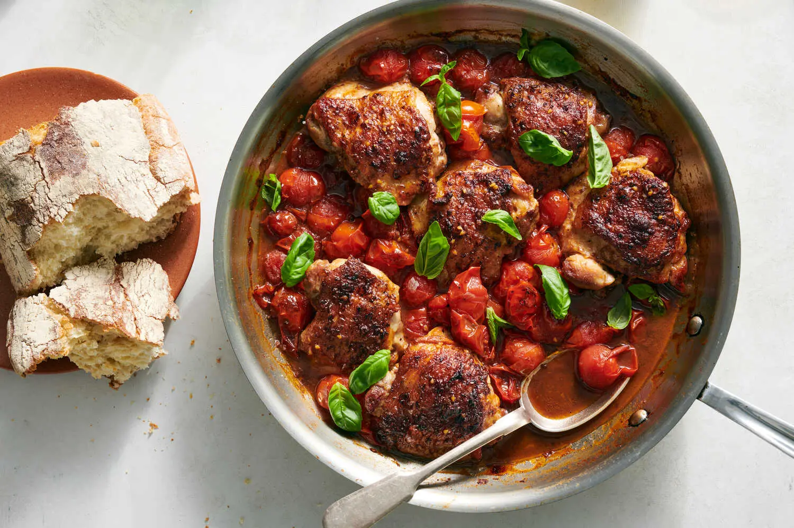
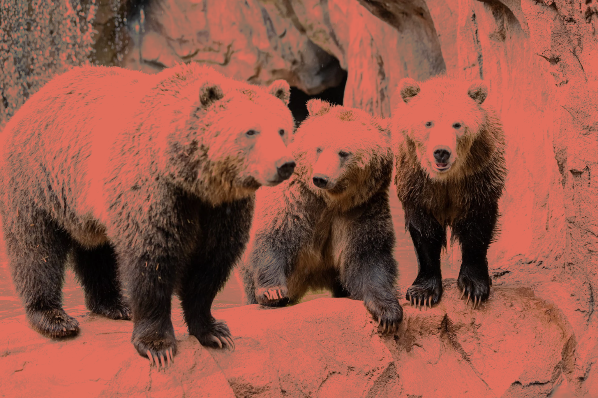
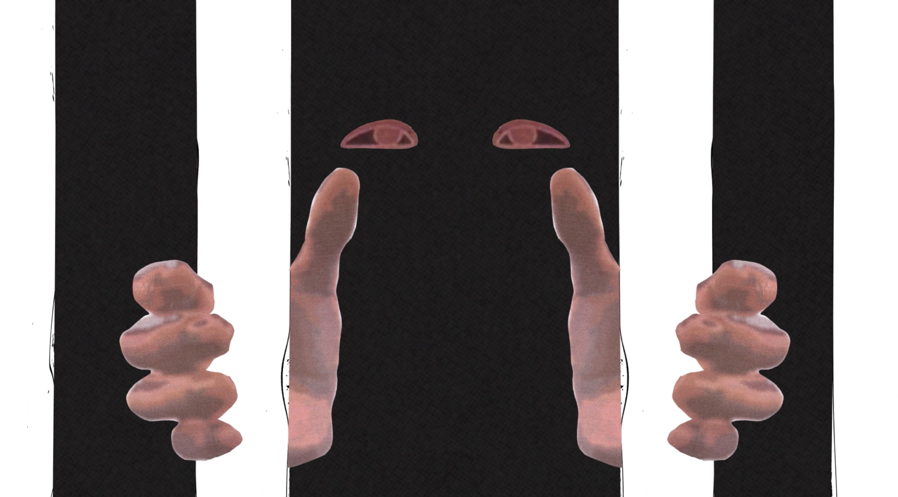
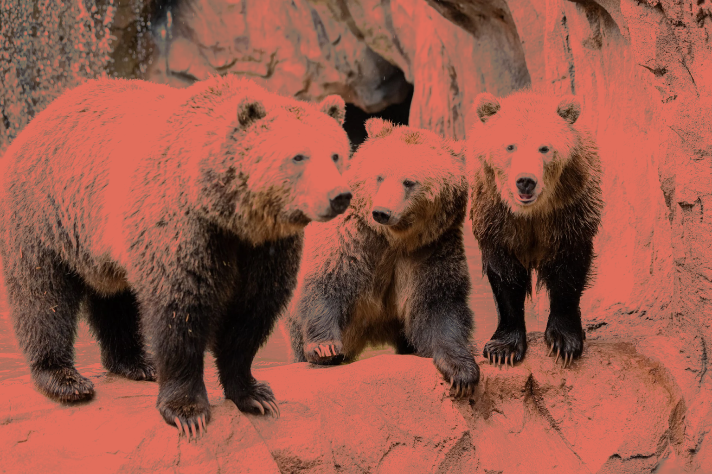
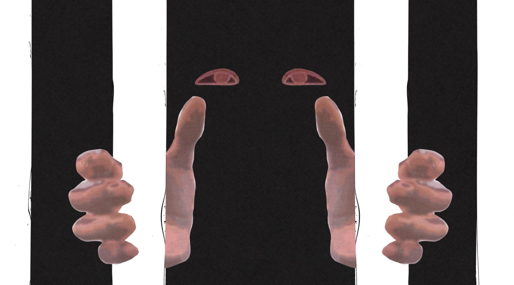

 




Recipe Page
Balsamic Chicken Thighs
I designed a recipe page for balsamic chicken thighs with burst tomatoes. The original recipe was adapted from Dan Pelosi.
Microsite - Creative Director
Porsche 928
I led disscussions with designer/developer Maddix Cradlebaugh to define the goals & visual tone of the Porsche 928 microsite.
Microsite - Designer/Developer
Bears
I was responsible for the design & development of the Bears microsite. I partnered Caroline Blazek, who provided creative direction.
Word & Image II
Personal Essay On Screen
I created a stop-motion animation to publicize a reading event of the short story Sacrifice by author Tyrese Coleman.
Typography II
Exhbition Poster Animation
After designing a poster for Only The Young, a Korean postwar art exhibition, I created a corresponding animated component.